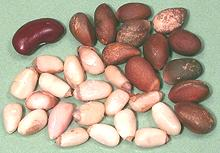

Pine nuts (officially a seed, not a nut) have been eaten since prehistoric times in Europe, Asia and North America. Today the sweet resinous seeds are somewhat costly and used mostly as a flavoring ingredient but Italian pesto sauce is often based on pine nuts (other nuts are also used).
Pine nuts from a number of species are available. In Europe it's mostly the Stone Pine (Pinus pinea) and in Asia the Korean Pine (Pinus koraiensis) and Chilgoza Pine (Pinus gerardiana). Siberian Pine (Pinus sibirica) and a number of other varieties are also used. In North America seeds of various species of Pinon pines (subgenus Ducampopinus) are harvested.
The most common commercial pine nut is the Korean, a fairly large seed, followed by the Siberian, a fairly small seed. North American Pinon seeds are large but in short supply due to misguided forest destruction to make range land after WWII. Most now come from Mexico and the price is higher than Asian imports.
The soft layer between pine bark and the wood is also edible and has been used as a famine food. Pine needles are sometimes used as a flavoring.
The photo shows the end of a pine branch from a tree in my front yard with tiny male cones at the center, a pine cone of unknown source and a few whole seeds in the shell from that cone. The small shelled seeds were commercially purchased and are from Siberian pines.
More on Conifers.
 The seeds shown to the left are from Pinion Pines (P. monophylla) from Nevada. Upper right, in the shell (0.56 inch long x 0.30 inch, 120/ounce), lower left, shelled (0.48 inch long x 0.25 inch, 150/ounce), and of course in the upper left is our ever present red kidney bean for scale. Shelled yield is about 80%. Unlike some pine nuts these pinon nuts have very thin shells.
Buying Storing: Pine nuts are now much easier to find and less expensive in regions with a yuppie population sufficient to attract an outlet of the rapidly expanding Trader Joe's chain. Other yuppie oriented chains should also have them. Pinion nuts can be ordered on-line when in season. A good source is Pinenut.com.
Storing: Keep pine nuts frozen, buried in the back of your freezer compartment where the temperature is most stable - in the shell they'll keep about 1 year, half that out of the shell.Some batches of pine nuts have produced "pine mouth" in some people. It is not common, but became noticed in 2008 and increased over the next few years. It is a strong bitter metallic taste in the back of the mouth which makes it impossible to enjoy food or drink for 2 to 3 days, and sometimes up to 14 days. It appears 12 to 48 hours after eating pine nuts.
Preliminary research indicated this may be caused by including nuts of pine species not normally used for human consumption, specifically Pinus armandii and possibly Pinus massoniana, but this is not yet certain. Chinese authorities have implemented measures to prevent nuts from P. armandii from included in batches for export. Vulnerability to this disorder may be partially genetic, but incidents seem to have declined since 2015.
Portuguese and Spanish pine nuts are not implicated, but are not easy to find in North America, so the only certain way to avoid pine mouth is to buy pinion pine nuts from the U.S. and Mexico. These are sometimes sold "in the shell", and shelling them is a hassle without a pine nut shelling machine.
cf_pinez 091112 r 120701, 190630 - www.clovegarden.com